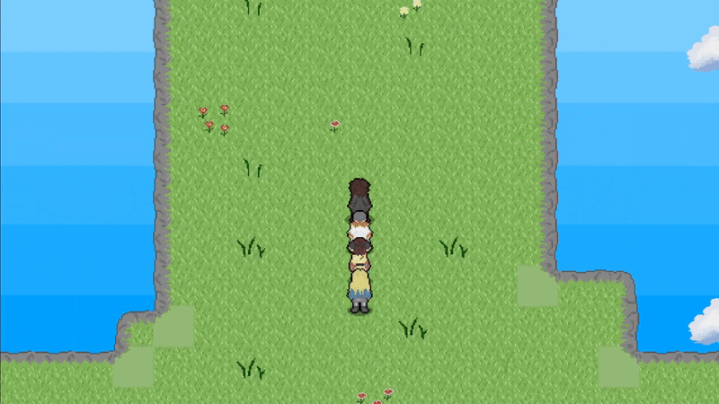

Overview
Within Time is a TBRPG that I began developing back in 2023 in an effort to create my first commercial game. It evolved into a large-scale project I’ve dedicated most of my time to, built with the Godot engine and developed alongside my indie team “Team INNERMINDS”. Within Time has spent quite a lot of time going through reworks and changes in order to accomodate a shifting vision though through it all my passion and desire to create a game that pays homage to some of my favourite games has remained strong. Within Time follows the story of Yunis Caelum and his surrounding friends as they delve into a world previously unknown to mankind in an effort to search for their friend June Clavis. The game follows this main cast of four as they traverse this new world, encountering foes and friends alike, with each step they make creating more and more danger for the crew. Within Time aims to replicate the feel of the classic JRPG era of the SNES whilst adding a level of moderenisation and uniqueness on top of it to truly make Within Time stand out.

Gameplay
Within Time features a unique take on the turn based combat system, utilising our very own 'STANCE' system that rewards tactical play and deep knowledge of the various systems in Within Time. Exploiting enemy weaknesses, gaining critical hits, dodging attacks or blocking foes incoming blows all contributes to your 'momentum' in battle, where higher momentum allows you to utilise a variety of mechanics, such as the 'DUAL SKILLS' feature or 'STANCE SKILLS'. Though don't get ahead of yourself, if your mis-play and take any criticals or weakness exploits yourself you'll find that your momentum will quickly drop as the enemy begins to overpower your team. So make sure you're always planning three moves ahead.
Outside of combat you'll explore two hand-crafted worlds with over eleven different uniquely designed regions to visit throughout the Within Time story. Allowing you to interact with all kinds of characters and uncover secrets many may not find. The journey across the various regions
of Within Time's two worlds are sure to keep you occupied as you are constantly being introduced to new sights as you travel from location to location and progress the story or complete your own quests. We can assure that there's never a dull moment when exploring the worlds.


Development Process
Within Time has an expansive development history. Originally starting out as a concept in 2022 going under the name 'Our Mind', myself and two friends decided to formulate the concept into a proper game and began working on a prototype in RPGMakerMV in late 2022. We drafted up a basic plot overview, characters, story and a couple unique mechanics we wanted to implement and eventually in early 2023 a demo of 'Our Mind' was released to steam. Despite getting a demo out I wasn't particularly happy with the game in any state and knew that I would be able to do better had I changed my perspective and swapped engines to something a bit more capable. This then started the very long process of trying to re-structure everything and settle on an engine and style that we liked. So from the span of early 2023 until Janurary of 2025 'Our mind' faced significant changes. The entire story was rewritten from the ground up to be a much more original and expansive idea, fitting closer to my idea of a dream game meanwhile I completely revamped the art style too. Within Time also briefly saw prototypes in both Unity and Game Maker Studio 2, with the Game Maker studio build making significant process before being eventually scrapped in favour for using Godot as the engine to develop Within Time in. It was also during this period I officially started 'Team INNERMINDS' my indie company that is now the sole entity behind the development of Within Time, as we brought on new members of the team to help myself create Within Time in. With a name change to 'Within Time' coming shortly after. Within Time has now spent roughly 10 months in development in Godot as we are preparing to release the demo for the game by the end of the year.
Skills Demonstrated
- Advanced GDScript development and modular architecture
- Team collaboration using Git version control
- Pixel art and UI design integration
- Project management and iterative design